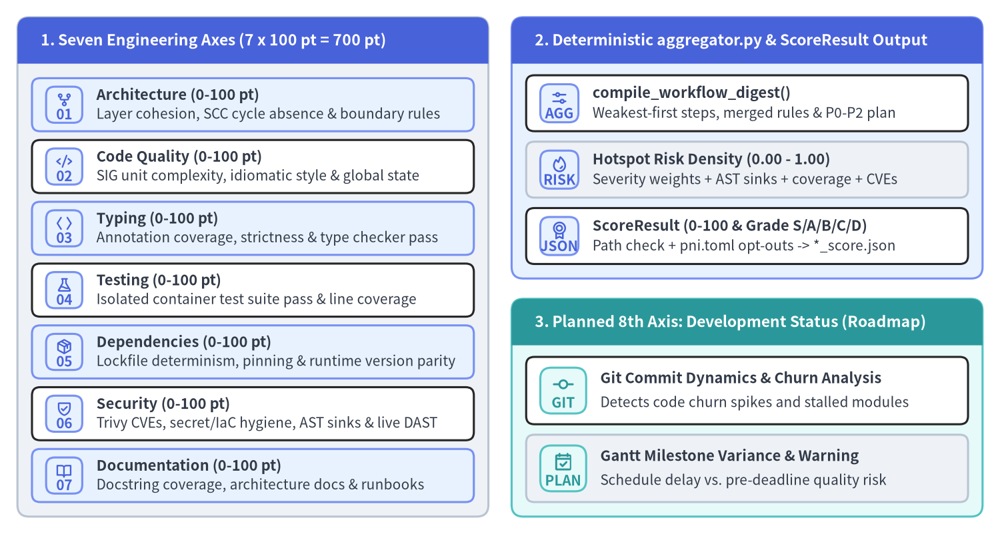
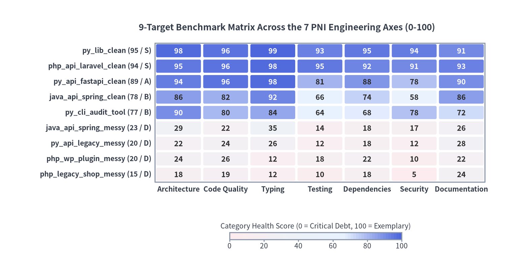

7軸品質スコアリングモデルと決定論的アグリゲーション
pni501 は、決定論的な静的 AST 解析・コンテナ実行検証・サプライチェーンセキュリティスキャン・動的 HTTP ペネトレーションテストと、スキーマ強制された AI 評価を完了すると、すべての診断エビデンスを正規 JSON アーティファクト（ScoreResult および MigrationPlanResult）へ統合します。LLM の生の並び順や未検証のファイルパスをそのまま信用するのではなく、aggregator.py と engine.py がリポジトリの実在パス検証、pni.toml のオプトアウト適用、モジュール単位のホットスポットリスク密度計算、および全ファインディング・ルール判定・改善計画の事前ソートを決定論的に実行します。

Source Code
from drawlib.canvas import save, setup
from drawlib.icons import phosphor
from drawlib.smartarts import CardList, Panel
from drawlib.styles import Styles
setup(width=172, height=92, dpi=150)
axes_panel = Panel(
"1. Seven Engineering Axes (7 x 100 pt = 700 pt)",
header_variant="filled",
header_height=8.0,
style=Styles.Neutral.patch(shape_r=2.0),
header_style=Styles.PrimaryFlat,
text_style=Styles.WhiteBold.patch(text_size=11.0),
)
axes_panel.draw(xy=(3.0, 3.0), width=81.0, height=86.0)
axes_cards = CardList(
style=Styles.WhiteBordered.patch(shape_r=1.4),
text_style=Styles.DarkBold.patch(text_size=10.5),
description_style=Styles.Dark.patch(text_size=10.0),
badge_shape="rounded_rect",
badge_style=Styles.PrimaryNeutral,
badge_text_style=Styles.PrimaryBold.patch(text_size=10.0),
icon_style=Styles.PrimaryBold,
direction="vertical",
spacing=1.5,
)
axes_cards.add(
"Architecture (0-100 pt)",
"Layer cohesion, SCC cycle absence & boundary rules",
badge_text="01",
icon=phosphor.git_fork,
style=Styles.PrimaryNeutral.patch(shape_r=1.4),
)
axes_cards.add(
"Code Quality (0-100 pt)",
"SIG unit complexity, idiomatic style & global state",
badge_text="02",
icon=phosphor.code,
)
axes_cards.add(
"Typing (0-100 pt)",
"Annotation coverage, strictness & type checker pass",
badge_text="03",
icon=phosphor.brackets_angle,
style=Styles.PrimaryNeutral.patch(shape_r=1.4),
)
axes_cards.add(
"Testing (0-100 pt)",
"Isolated container test suite pass & line coverage",
badge_text="04",
icon=phosphor.flask,
)
axes_cards.add(
"Dependencies (0-100 pt)",
"Lockfile determinism, pinning & runtime version parity",
badge_text="05",
icon=phosphor.package,
style=Styles.PrimaryNeutral.patch(shape_r=1.4),
)
axes_cards.add(
"Security (0-100 pt)",
"Trivy CVEs, secret/IaC hygiene, AST sinks & live DAST",
badge_text="06",
icon=phosphor.shield_check,
)
axes_cards.add(
"Documentation (0-100 pt)",
"Docstring coverage, architecture docs & runbooks",
badge_text="07",
icon=phosphor.book_open,
style=Styles.PrimaryNeutral.patch(shape_r=1.4),
)
axes_cards.draw(xy=(5.5, 5.5), width=76.0, height=73.0)
agg_panel = Panel(
"2. Deterministic aggregator.py & ScoreResult Output",
header_variant="filled",
header_height=8.0,
style=Styles.PrimaryNeutral.patch(shape_r=2.0),
header_style=Styles.PrimaryFlat,
text_style=Styles.WhiteBold.patch(text_size=11.0),
)
agg_panel.draw(xy=(88.0, 44.0), width=81.0, height=45.0)
agg_cards = CardList(
style=Styles.WhiteBordered.patch(shape_r=1.4),
text_style=Styles.DarkBold.patch(text_size=10.5),
description_style=Styles.Dark.patch(text_size=10.0),
badge_shape="rounded_rect",
badge_style=Styles.PrimaryNeutral,
badge_text_style=Styles.PrimaryBold.patch(text_size=10.0),
icon_style=Styles.PrimaryBold,
direction="vertical",
spacing=1.8,
)
agg_cards.add(
"compile_workflow_digest()",
"Weakest-first steps, merged rules & P0-P2 plan",
badge_text="AGG",
icon=phosphor.sliders_horizontal,
)
agg_cards.add(
"Hotspot Risk Density (0.00 - 1.00)",
"Severity weights + AST sinks + coverage + CVEs",
badge_text="RISK",
icon=phosphor.fire,
style=Styles.Neutral.patch(shape_r=1.4),
)
agg_cards.add(
"ScoreResult (0-100 & Grade S/A/B/C/D)",
"Path check + pni.toml opt-outs -> *_score.json",
badge_text="JSON",
icon=phosphor.medal,
)
agg_cards.draw(xy=(90.5, 46.5), width=76.0, height=32.5)
future_panel = Panel(
"3. Planned 8th Axis: Development Status (Roadmap)",
header_variant="filled",
header_height=8.0,
style=Styles.SecondaryNeutral.patch(shape_r=2.0),
header_style=Styles.SecondaryFlat,
text_style=Styles.WhiteBold.patch(text_size=11.0),
)
future_panel.draw(xy=(88.0, 3.0), width=81.0, height=37.5)
future_cards = CardList(
style=Styles.WhiteBordered.patch(shape_r=1.4),
text_style=Styles.DarkBold.patch(text_size=10.5),
description_style=Styles.Dark.patch(text_size=10.0),
badge_shape="rounded_rect",
badge_style=Styles.SecondaryNeutral,
badge_text_style=Styles.SecondaryBold.patch(text_size=10.0),
icon_style=Styles.SecondaryBold,
direction="vertical",
spacing=1.8,
)
future_cards.add(
"Git Commit Dynamics & Churn Analysis",
"Detects code churn spikes and stalled modules",
badge_text="GIT",
icon=phosphor.git_commit,
)
future_cards.add(
"Gantt Milestone Variance & Warning",
"Schedule delay vs. pre-deadline quality risk",
badge_text="PLAN",
icon=phosphor.calendar_check,
style=Styles.Neutral.patch(shape_r=1.4),
)
future_cards.draw(xy=(90.5, 5.5), width=76.0, height=25.0)
save()
1. 実装済み7つの品質評価軸（700点満点プールとグレード判定）
すべての健全性監査ワークフローは、CategoryScores（src/pni/_actions/base_model.py）に定義された標準 7 評価軸で対象リポジトリを評価します。各軸は 0..100 の整数スケール（7軸合計 700 点満点プール）で採点され、エビデンス付きの根拠 CategoryRationales とともに正規化された 0..100 の総合スコア overall_score へと統合されます。
| # | 評価軸キー | 配点 | 主な決定論的シグナルと評価スコープ |
|---|---|---|---|
| 1 | architecture |
0..100 |
パッケージ・レイヤ凝集度、依存方向の規律、強連結成分（SCC）循環インポートの有無、フレームワーク層とドメイン層の境界分離。 |
| 2 | code_quality |
0..100 |
SIG 準拠のユニット複雑度、関数行数・引数数、イディomaticな構文、構造化ロギング、I/O タイムアウト規律、可変グローバル状態の排除。 |
| 3 | typing |
0..100 |
型注釈カバレッジ（type_safety_coverage_pct）、厳密性宣言（py.typed、ジェネリクス、strict_types=1、tsconfig strict）、静的型チェッカのクリーン度。 |
| 4 | testing |
0..100 |
自動テストスイートの網羅性、アサーション密度、隔離コンテナハーネスでのテスト通過率（run_check）、スモーク検証、実測ライン・ブランチカバレッジ。 |
| 5 | dependencies |
0..100 |
マニフェストとロックファイルの決定論性、バージョンピン留め規律、宣言ランタイム整合性（language_version_mismatches）、未宣言インポートの有無。 |
| 6 | security |
0..100 |
アプリ・OS コンテナの CVE 脆弱性（Trivy security_scan）、秘密情報管理、IaC/Dockerfile ハードニング、CWE 分類 AST シンク（dangerous_sinks）、動的 HTTP ペネトレーションテスト結果（web_pentest）。 |
| 7 | documentation |
0..100 |
公開モジュール・関数の docstring カバレッジ（docstring_coverage_pct）、オンボーディング・設計ドキュメント、ガバナンスファイル（SECURITY.md、LICENSE）、運用ランブック。 |
1.1 HealthGrade マッピング（S / A / B / C / D）
リポジトリ全体の overall_score と各ステップの AuditDimensionScore は、src/pni/_workflows/aggregator.py の score_to_grade() によって決定論的に 5 段階の HealthGrade へ変換されます。
| グレード | スコア閾値 | エンジニアリング上の解釈 |
|---|---|---|
S |
90 .. 100 |
構造的・実行時・セキュリティ上の技術的負債がほぼゼロの模範的なリファレンス実装。 |
A |
80 .. 89 |
軽微かつ非ブロッキングな改善余地のみで、本番運用に十分なエンジニアリング品質。 |
B |
70 .. 79 |
構造基盤は健全だが、局所的なテストカバレッジ不足・依存管理・ハードニングの課題を抱える状態。 |
C |
60 .. 69 |
スケール前に優先的な是正を要する保守性または運用上のリスクが顕在化している状態。 |
D |
< 60 |
深刻なアーキテクチャ崩壊、ビルド・実行障害、または悪用可能なセキュリティ負債を抱え、計画的な介入が不可欠な状態。 |
1.2 今後の拡張構想：8軸目「開発ステータスと進捗差分」
実装済みの 7 つのコード・ランタイム評価軸に加え、pni501 のロードマップでは第 8 の評価軸として 開発ステータス（development_status） を構想しており、静的な品質スナップショットとプロジェクト進捗動態の統合モニタリングを目指しています。
- Git コミット動態とコードチャーン解析: コミット履歴を解析し、特定モジュールへの変更集中（チャーン急増）、ホットフィックスの頻発、または開発が停滞しているコア領域を検知します。
- ガントチャート計画マイルストーンとの差分突合: ガントチャート上の計画スケジュールと、リポジトリ上の機能・サブシステム実装進捗を突合します。
- 納期直前の駆け込み品質低下リスクの早期警告: スケジュール遅延とコミットチャーン急増が同時に発生している領域を検知し、テスト省略やアーキテクチャ境界破壊が起きる前に早期警告を発します。
2. aggregator.py による決定論的エンリッチメントと事前ソート
AI エージェントが最終アクション emit_score で ScoreResult を提出すると、src/pni/_workflows/engine.py:_enrich_score_result() は LLM の生ソート順や未検証のファイル参照をそのまま受け入れません。代わりに .pni/cache/workflow_state.db から WorkflowFactsBundle を再構築し、すべての file_path と target_files を実リポジトリおよび AstFacts.module_inventory と照合したうえで、不変プロビナンス（workflow_id、workflow_run_id、UTC evaluated_at、target_root、facts_file、再計算された grade、metrics_snapshot）を刻印し、リスト項目を aggregator.py:compile_workflow_digest() の正規出力で置換します。
2.1 弱点順ディメンション・ルール準拠性・位置統合ファインディング
audit_dimensions（弱点順ステップスコアカード）: 完了した各ai_interpretアクションをAuditDimensionScore（pass_count、warn_count、fail_count、score、grade）へ集約し、(score, -fail_count, -warn_count, seq)の昇順でソートすることで、最も弱いエンジニアリング領域を先頭に表示します。step_scoreが省略された場合、_compute_step_score()がsuggested_scoresの平均値または100 - sum(SEVERITY_DEDUCTION)（critical=35、high=20、medium=10、low=3、info=1）へ決定論的にフォールバックします。rule_compliance（fail -> warn -> pass -> not_applicable）:normalize_step_rule_checks()が各ステップの全アクティブルールに対してRuleCheckResultを保証し（未提出時はファインディングから自動推論）、merge_and_sort_rule_compliance()がルール ID ごとに最も厳しいステータスを保持してエビデンスを結合したうえで(STATUS_RANK[status], rule_id)順にソートします。findingsと位置統合されたconsolidated_findings:deduplicate_and_sort_findings()が生ファインディングをcritical -> high -> medium -> low -> info順に並べます。さらにconsolidate_findings_by_location()（src/pni/_actions/base_model.py）が同一の(file_path, line)を指す複数ルール違反を単一のConsolidatedFinding（rule_ids、combined_evidence、merged_recommendation）に統合し、PDF レポートのテーブル行重複を排除します。action_plan（P0 -> P1 -> P2）:deduplicate_and_sort_actions()が(priority, title.lower())で重複を排除し、(PRIORITY_RANK[priority], category, title)で決定論的にソートします。pni.tomlによる宣言的オプトアウト（opt_outs）:_filter_findings_by_opt_out()とnormalize_step_rule_checks()がpni.tomlの[[opt_out]]エントリ（ルール・チェックidおよび任意のファイルscopeグロブ）を適用し、該当ファインディングの除外、リポジトリ全体で免除されたルールのnot_applicable化、およびScoreResult.opt_outsへの透明なAppliedOptOut監査証跡の記録を行います。
2.2 モジュールホットスポットのリスク密度計算式（0.00〜1.00）
compute_module_hotspots() は、検出されたすべてのソースモジュールと指摘対象インフラファイルを [0.00, 1.00] の有界スケールで採点し、(-risk_score, -loc, file_path) の降順でソートします。指摘ゼロかつ構造・実行時・セキュリティボーナスがゼロの健全なモジュールにはベースライン値 0.06（_BASE_HEALTHY_RISK）が付与され、指摘があるモジュールには 4 つの決定論的シグナルが合算されます。
SEVERITY_RISK_WEIGHT = {
"critical": 0.45,
"high": 0.28,
"medium": 0.15,
"low": 0.06,
"info": 0.02,
}
_BASE_HEALTHY_RISK = 0.06
# Per-file hotspot risk density in [0.00, 1.00]:
# 1. raw_weight = sum(SEVERITY_RISK_WEIGHT[f.severity] for f in file_findings)
# 2. ast_bonus = +0.12 (complex_functions) + 0.14 (global_state)
# + 0.25 (hardcoded_secrets) + min(0.30, 0.12 * sink_count)
# 3. cov_bonus = +0.16 (0.0% line coverage) or +0.10 (0.1%..49.9% coverage, >=5 stmts)
# 4. sec_bonus = min(0.30, 0.15 * trivy_secret_or_iac_hits)
risk_score = round(min(1.0, raw_weight + ast_bonus + cov_bonus + sec_bonus), 2)
3. パス検証済み MigrationPlanResult スキーマ
段階的なモダナイゼーションを要するリポジトリ（category: migration、based_on: <audit_workflow_id>）では、emit_migration_plan アクションが MigrationPlanResult（src/pni/_actions/migration_analyze/models.py）を検証・永続化し、pni validate-migration-plan <path> で検証可能にします。
- 実行ガードレール:
transformation_mode（same_lang_upgrade、architectural_restructure、cross_stack_replacement）、migration_strategy（phased_pr、strangler_fig、rewrite）、api_compatibility（strict、versioned_v2、flexible）、bug_handling_policy（ask_human、preserve_behavior、fix_in_phase3）に加え、confirmed_assumptionsと明示的なnon_goalsを固定します。 target_axes（MigrationAxis）とtarget_architecture: As-Is から To-Be への各変換軸（language_runtime、framework、architecture_pattern、database_persistence、cache_state、auth_security、messaging_async、container_cicd、custom）と実在検証済みのaffected_files、およびtarget_layers（allowed_dependencies、forbidden_imports）とファイル単位のcomponent_mappingsを定義します。decision_log（DecisionLogItem、DEC-01..NN）: Hyrum の法則に基づく仕様かバグか曖昧なレガシー挙動（Spec vs. Bug）を分離し、Phase 3 でのロジック変更前にプロダクトオーナーの承認を得るためのcurrent_behavior、impact_if_changed、recommended_optionを記録します。phase_gates（Phase 0..4）とpr_wbs（PR-01..NN）: Phase 0（特性テストとハーネス復旧）、Phase 1（循環切断と Port 抽出）、Phase 2（機械的 Codemod と DB/Cache Adapter 化）、Phase 3（型付き DTO と承認済みバグ修正）、Phase 4（カットオーバーと CI/コンテナハードニング）の 5 段階ゲート付きロードマップを強制し、決定論的MigrationFacts（refactoring_waves、cycle_cuts、implicit_contracts、boundary_touchpoints、mechanical_codemods）でエンリッチされたトポロジカル順 PR チケットを出力します。
4. 9ターゲット多言語ベンチマークマトリクス
クリーンな本番リファレンス実装、中規模サービス、および深刻な技術的負債を抱えたレガシーコードベースにわたってスコアリング精度を検証するため、pni501 は examples/{python,java,php}/ 配下に 9 つのエンドツーエンド・ベンチマークリポジトリを維持し、コミット済みの ScoreResult JSON とコンパイル済み A4 PDF レポートを reports/{python,java,php}/ に同梱しています。

Source Code
from drawlib.canvas import save, setup
from drawlib.charts.heatmap import HeatmapChart
from drawlib.styles import Styles
setup(width=176, height=90, dpi=150)
chart = HeatmapChart(
styles=[Styles.DangerNeutral, Styles.Neutral, Styles.PrimaryNeutral, Styles.PrimaryFlat],
x_categories=[
"Architecture",
"Code Quality",
"Typing",
"Testing",
"Dependencies",
"Security",
"Documentation",
],
min_value=0.0,
max_value=100.0,
cell_gap=0.8,
cell_r=0.5,
value_format="{:.0f}",
auto_contrast_text=True,
axis_line_style=Styles.Muted,
axis_text_style=Styles.DarkBold.patch(text_size=10.0),
value_text_style=Styles.DarkBold.patch(text_size=10.5),
width=144.0,
height=62.0,
title="9-Target Benchmark Matrix Across the 7 PNI Engineering Axes (0-100)",
title_style=Styles.DarkBold.patch(text_size=12.5),
)
chart.add_row("py_lib_clean (95 / S)", [98, 96, 99, 93, 95, 94, 91])
chart.add_row("php_api_laravel_clean (94 / S)", [95, 96, 98, 95, 92, 91, 93])
chart.add_row("py_api_fastapi_clean (89 / A)", [94, 96, 98, 81, 88, 78, 90])
chart.add_row("java_api_spring_clean (78 / B)", [86, 82, 92, 66, 74, 58, 86])
chart.add_row("py_cli_audit_tool (77 / B)", [90, 80, 84, 64, 68, 78, 72])
chart.add_row("java_api_spring_messy (23 / D)", [29, 22, 35, 14, 18, 17, 26])
chart.add_row("py_api_legacy_messy (20 / D)", [22, 24, 26, 12, 18, 12, 28])
chart.add_row("php_wp_plugin_messy (20 / D)", [24, 26, 12, 18, 22, 10, 22])
chart.add_row("php_legacy_shop_messy (15 / D)", [18, 19, 12, 10, 18, 5, 24])
chart.draw(xy=(28.0, 21.0))
chart.draw_colorbar(
xy=(80.0, 6.5),
text_style=Styles.Dark.patch(text_size=10.0),
length=60.0,
thickness=2.4,
num_ticks=6,
value_format="{:.0f}",
label="Category Health Score (0 = Critical Debt, 100 = Exemplary)",
)
save()
4.1 クリーン・中規模・レガシー9ターゲットの実測監査スコア
9 つのベンチマークターゲットは、Grade S/A のリファレンス実装 3 件、コード構造は整っているもののコンテナベースイメージの CVE・未認証 Actuator/API ルート・分岐カバレッジの不足が検出される現実的な Grade B リポジトリ 2 件、および深刻な負債を抱える Grade D レガシーアプリケーション 4 件で構成されています。
| ワークフロー ID | プロジェクト名 | スタック構成 | 総合 | Arch | Qual | Type | Test | Deps | Sec | Docs | 出力アーティファクト (reports/...) |
|---|---|---|---|---|---|---|---|---|---|---|---|
py_lib_clean |
metrics-kit |
Python 3.12 ライブラリ | 95 (S) | 98 | 96 | 99 | 93 | 95 | 94 | 91 | python/lib_clean{_score.json,.pdf} |
php_api_laravel_clean |
order-fulfillment |
PHP 8.3 / Laravel 11 API | 94 (S) | 95 | 96 | 98 | 95 | 92 | 91 | 93 | php/api_laravel_clean{_score.json,.pdf} |
py_api_fastapi_clean |
order-dispatch |
Python 3.12 / FastAPI | 89 (A) | 94 | 96 | 98 | 81 | 88 | 78 | 90 | python/api_fastapi_clean{_score.json,.pdf} |
java_api_spring_clean |
inventory-service |
Java 21 / Spring Boot 3 | 78 (B) | 86 | 82 | 92 | 66 | 74 | 58 | 86 | java/api_spring_clean{_score.json,.pdf} |
py_cli_audit_tool |
logpulse |
Python CLI ツール | 77 (B) | 90 | 80 | 84 | 64 | 68 | 78 | 72 | python/cli_audit_tool{_score.json,.pdf} |
java_api_spring_messy |
legacy-billing |
レガシー Java 8/11 Spring | 23 (D) | 29 | 22 | 35 | 14 | 18 | 17 | 26 | java/api_spring_messy{_score.json,.pdf} |
py_api_legacy_messy |
legacy-order-hub |
レガシー Python Flask API | 20 (D) | 22 | 24 | 26 | 12 | 18 | 12 | 28 | python/api_legacy_messy{_score.json,.pdf} |
php_wp_plugin_messy |
wp_plugin_messy |
手続き型 WP プラグイン | 20 (D) | 24 | 26 | 12 | 18 | 22 | 10 | 22 | php/wp_plugin_messy{_score.json,.pdf} |
php_legacy_shop_messy |
legacy_shop_messy |
手続き型 PHP 7.4 EC | 15 (D) | 18 | 19 | 12 | 10 | 18 | 5 | 24 | php/legacy_shop_messy{_score.json,.pdf} |
続いて、ScoreResult と MigrationPlanResult を 7 章構成のベクター PDF レポートへコンパイルする仕組みについては Drawlib ビジュアルレポーター を、各言語の解析器仕様については 対応 6 言語マトリクス を参照してください。